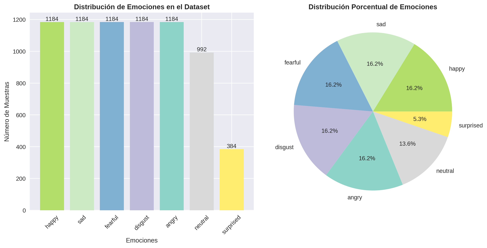
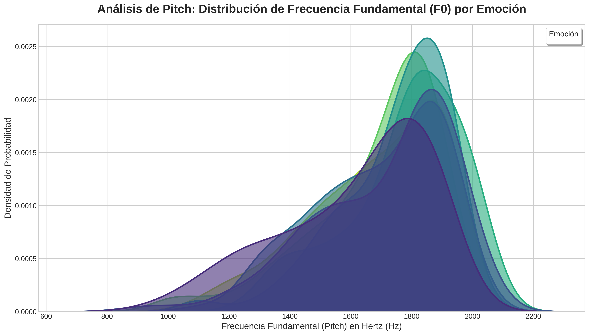
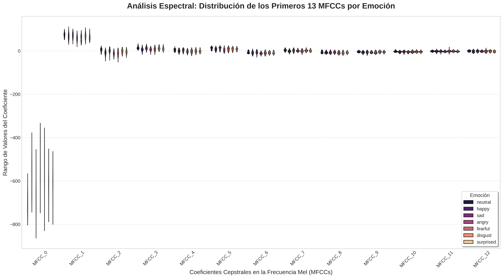
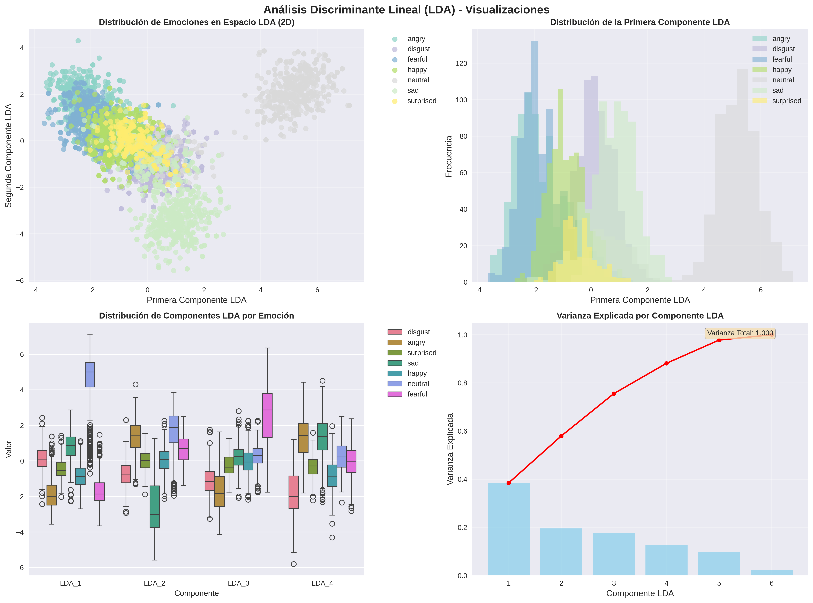
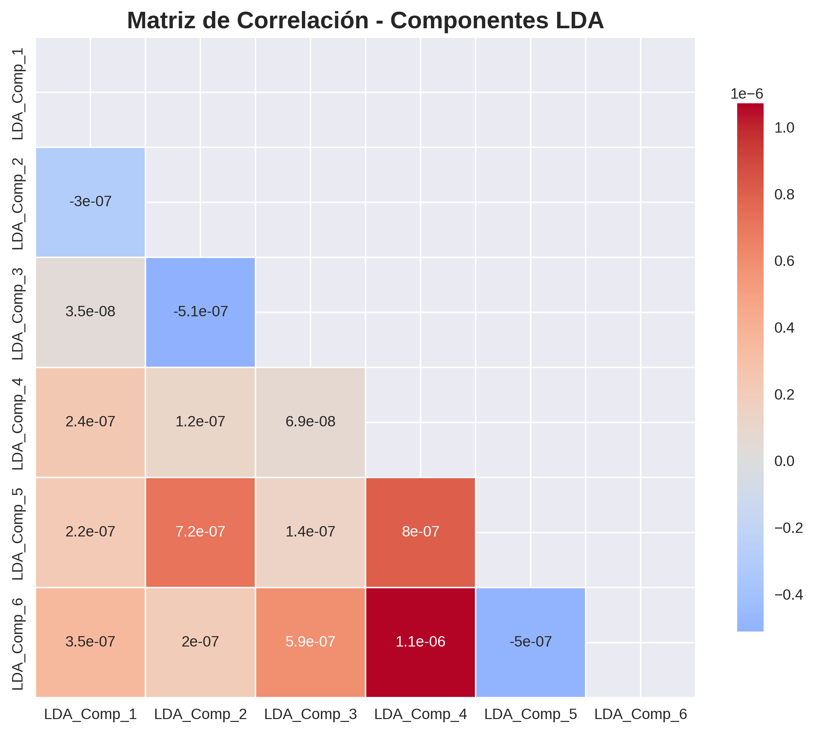
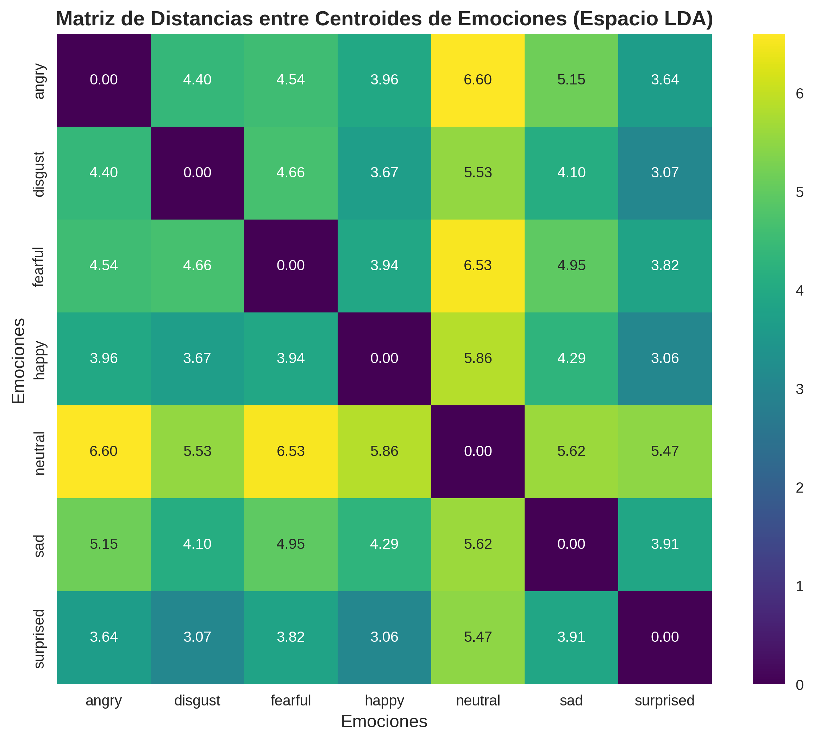
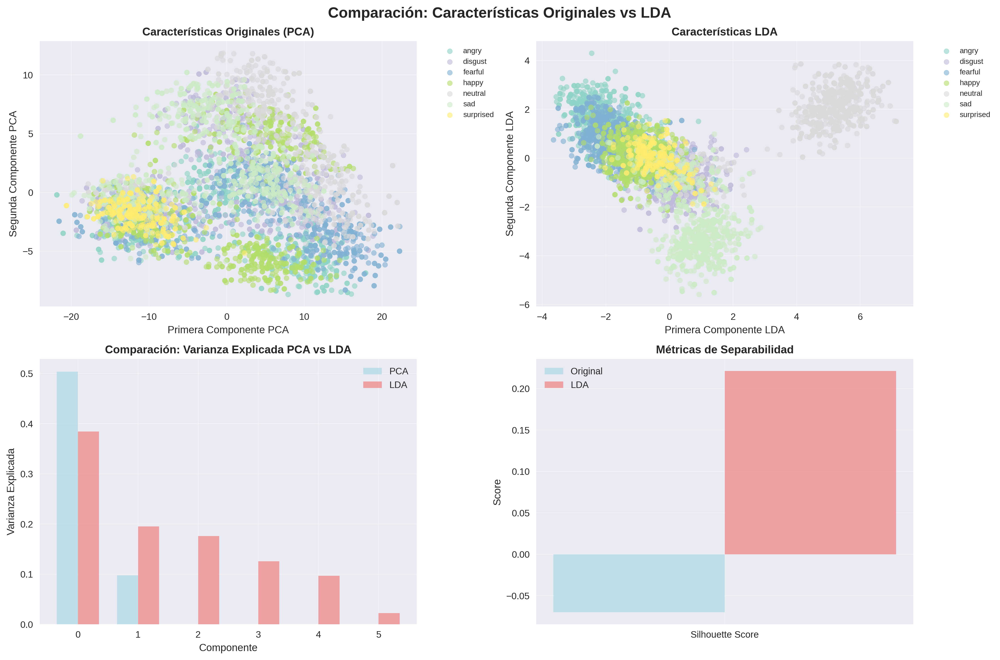

Análisis de Emociones en la Voz con Inteligencia Artificial
Explorando Patrones Acústicos para la Clasificación del Habla Afectiva
Un enfoque técnico para la modelación de características prosódicas y espectrales.
Equipo de Desarrollo
Alejandro Pérez
Yusmany Rejopachi
Jair Gutiérrez
1. Justificación Técnica
¿Por qué Audio para Reconocimiento Emocional?
La voz humana contiene una firma acústica compleja, rica en información latente sobre el estado afectivo del hablante.
Características Prosódicas
El pitch, la intensidad y el ritmo del habla son indicadores clave del estado emocional.
Patrones Espectrales
La distribución de energía en las frecuencias (formantes) varía sistemáticamente con la emoción.
Señal No Estructurada
El habla es una fuente de datos compleja, ideal para ser modelada con técnicas de IA.
¿Por qué Inteligencia Artificial?
- Extracción de Patrones: Capacidad para identificar automáticamente características complejas en espectrogramas, indetectables para el análisis tradicional.
- Análisis Objetivo: Los modelos de IA ofrecen una cuantificación consistente y reproducible de las características vocales.
- Modelado de Alta Dimensión: Habilidad para procesar miles de características extraídas de una sola señal de audio.
2. Descripción del Problema
Problema Técnico Principal
El desafío de clasificar estados emocionales a partir de la señal del habla, que es inherentemente variable, ruidosa y de alta dimensionalidad.
¿Qué reto técnico abordamos?
- Desarrollar un modelo capaz de analizar las sutiles variaciones en grabaciones de voz.
- Identificar y diferenciar patrones acústicos para 7 emociones distintas: alegría, tristeza, enojo, miedo, sorpresa, disgusto y neutralidad.
- Manejar la variabilidad entre diferentes hablantes, idiomas y calidades de grabación.
- Construir un pipeline de datos robusto, desde el preprocesamiento de la señal hasta la clasificación.
3. Objetivo General
Desarrollar y evaluar un modelo de inteligencia artificial para la clasificación de emociones humanas a partir del análisis de características acústicas y espectrales del habla, estableciendo un pipeline completo desde el preprocesamiento de la señal hasta la predicción del modelo.
4. Objetivos Específicos
5. Metodología Iterativa
Adoptamos un enfoque de desarrollo cíclico, que nos permite refinar y mejorar continuamente nuestro modelo basándonos en los resultados obtenidos.
1. Adquisición de Datos
2. Análisis y Preprocesamiento
3. Extracción de Características
4. Entrenamiento del Modelo
5. Evaluación y Resultados
6. Adquisición de Conjuntos de Datos
Conjunto 1: Base de Datos de Habla Emocional Mexicana (MESD)
- Cantidad: 864 grabaciones de audio
- Características: Español mexicano, 6 emociones + neutralidad
- Utilidad: Adaptación específica al habla mexicana
Conjunto 2: Audio de Habla Emocional RAVDESS
- Cantidad: 2,496 grabaciones vocales
- Características: Calidad profesional, 24 actores
- Utilidad: Benchmarks robustos de rendimiento
Conjunto 3: Toronto Emotional Speech Set (TESS)
- Cantidad: 4,800 muestras de audio
- Características: Alta calidad, actrices entrenadas
- Utilidad: Datos consistentes y controlados para el modelo base
7. Distribución Final de Datos
📈 Total de archivos procesados: 7,296
Después de la integración y limpieza de todos los datasets
Distribución de Emociones en el Dataset Completo
Características de la distribución:
- Entrenamiento: 4,668 muestras (64.0%)
- Validación: 1,168 muestras (16.0%)
- Prueba: 1,460 muestras (20.0%)
- Diversidad: Múltiples hablantes, idiomas y contextos
- Calidad: Grabaciones profesionales y controladas
8. Análisis Exploratorio de Datos (EDA)
Preguntas principales de investigación:
- ¿Existen diferencias espectrales consistentes entre estados emocionales?
- ¿Cómo varían las características prosódicas entre emociones?
- ¿Qué nivel de variabilidad existe dentro de cada categoría?
Visualizaciones Seleccionadas:
9. Visualización: Distribución del Pitch
Análisis de Pitch: Distribución de Frecuencia Fundamental (F0) por Emoción
Esta gráfica nos muestra cómo se distribuye el tono de voz (Pitch) para cada emoción. El eje X representa la frecuencia en Hertz, donde valores más altos significan un tono más agudo. El eje Y indica la densidad de probabilidad, es decir, qué tan comunes son ciertos tonos para una emoción.
10. Visualización y Análisis de MFCCs
Análisis Espectral: Distribución de los Primeros 13 MFCCs por Emoción
Esta visualización nos permite comparar la "forma" del sonido para cada emoción a través de los Coeficientes Cepstrales en la Frecuencia Mel (MFCCs). Cada "violín" muestra el rango y la concentración de valores para un coeficiente (eje X) y una emoción (color).
| Coeficiente(s) | Interpretación General |
|---|---|
| MFCC 0 | Energía total o sonoridad de la señal. |
| MFCC 1-4 | Capturan la forma general y la pendiente del espectro (contornos principales). |
| MFCC 5-13+ | Describen los detalles más finos y las "texturas" del espectro. |
El Viaje del Audio: De la Onda al Vector
Antes de que la IA pueda analizar una emoción, debemos traducir la onda de sonido a un lenguaje que entienda: los números. Este proceso se llama Extracción de Características. A continuación, veremos el paso a paso de cómo convertimos un archivo de audio en un único vector de 180 características.
Paso 1: Digitalización y Ventaneo
1.1 Digitalización
Una onda de sonido es una señal analógica continua. Para que una computadora la procese, debemos muestrearla. Esto significa tomar "fotos" o mediciones de su amplitud a intervalos de tiempo regulares.
- Frecuencia de Muestreo (sr): 22,050 Hz. Tomamos 22,050 mediciones por segundo.
- Resultado (`x[n]`): Obtenemos un largo arreglo de números, donde cada número es la amplitud del sonido en un instante.
1.2 Ventaneo (Framing)
El habla no es estática. Para analizarla, la dividimos en pequeños segmentos superpuestos llamados ventanas o frames, donde asumimos que el sonido es estable.
- Tamaño de Ventana: ~25 milisegundos.
- Resultado: En lugar de un arreglo largo, ahora tenemos una colección de muchos arreglos pequeños (las ventanas).

La onda de sonido se divide en múltiples ventanas (frames) para su análisis.
Paso 2: La Transformada de Fourier (FFT)
¿Qué es y para qué sirve?
Para cada una de esas ventanas, necesitamos saber qué frecuencias la componen. La Transformada Rápida de Fourier (FFT) es la herramienta matemática que lo hace posible.
La FFT descompone la señal del dominio del tiempo (amplitud vs. tiempo) al dominio de la frecuencia (energía vs. frecuencia). Es como pasar de ver la onda completa a ver un ecualizador que nos muestra qué tan fuertes son los graves, los medios y los agudos en ese instante.
$$X_k = \sum_{n=0}^{N-1} x_n \cdot e^{-i \frac{2\pi}{N} kn}$$
- $X_k$: El espectro resultante (un número complejo que contiene amplitud y fase para la frecuencia $k$).
- $x_n$: El valor de la muestra $n$ en la ventana de audio.
- $N$: El número total de muestras en la ventana.
- $k$: El índice de la frecuencia que se está calculando (desde 0 hasta $N-1$).

La FFT convierte una ventana de audio en su espectro de frecuencias.
Paso 3: MFCCs - El "ADN" de la Voz
Más allá del Espectro
El espectro de la FFT es útil, pero no es eficiente. Los Coeficientes Cepstrales en la Frecuencia Mel (MFCCs) son una forma mucho más inteligente de resumir la información del espectro, imitando cómo funciona el oído humano.
- Escala Mel: Primero, se aplica un banco de filtros al espectro para agrupar las frecuencias de una manera logarítmica, similar a nuestra percepción auditiva.
- Logaritmo: Se toma el logaritmo de las energías, de nuevo, para imitar cómo percibimos la sonoridad.
- DCT: Finalmente, se aplica la Transformada de Coseno Discreta (DCT), una operación que comprime toda esa información espectral en unos pocos coeficientes.
El resultado son los MFCCs: una descripción numérica muy compacta y robusta del timbre de la voz en esa ventana.

Flujo simplificado para obtener los MFCCs a partir del espectro.
Paso 4: Operación de Promedio para Vector Final
Del Análisis por Ventana al Resumen Global
El proceso anterior nos da una matriz $M$ de características, donde cada fila $t$ corresponde a una ventana de tiempo y cada columna $j$ a una de las 180 características.
Para obtener un único vector $V$ que represente todo el audio, calculamos la media de cada característica a lo largo de todas las ventanas de tiempo $T$.
$$V_j = \frac{1}{T} \sum_{t=1}^{T} M_{t,j}$$
- $V_j$: Es el valor final de la característica $j$ en nuestro vector.
- $T$: Es el número total de ventanas (frames) en el audio.
- $M_{t,j}$: Es el valor de la característica $j$ en la ventana de tiempo $t$.
¿Por qué usar el promedio?
- Reducción temporal: Condensa información variable en el tiempo a un valor estable
- Robustez: El promedio es menos sensible a valores atípicos en ventanas individuales
- Representatividad: Captura las características dominantes del audio completo
- Compatibilidad: Produce un vector de tamaño fijo para cualquier duración de audio
Este proceso condensa la información temporal en una sola "ficha técnica" que describe las propiedades acústicas promedio de todo el clip.

Normalización de Audio: ¿Por qué es Crucial?
¿Qué es la Normalización de Audio?
La normalización ajusta la amplitud de una señal de audio para que su valor máximo sea 1.0 y el mínimo sea -1.0, estandarizando el volumen entre diferentes grabaciones.
$x_{norm}[n] = \frac{x[n]}{\max(|x[n]|)}$
- $x[n]$: Señal de audio original
- $x_{norm}[n]$: Señal normalizada
- $\max(|x[n]|)$: Valor absoluto máximo de la señal
Ventajas Críticas de la Normalización:
✅ Beneficios Técnicos
- Consistencia de Volumen: Elimina diferencias de grabación entre micrófonos y entornos
- Estabilidad Numérica: Previene overflow y underflow en cálculos posteriores
- Mejor Convergencia: Los algoritmos de ML convergen más rápido con datos normalizados
- Robustez: Reduce sensibilidad a variaciones de hardware de grabación
⚠️ Sin Normalización
- Sesgo por Volumen: Grabaciones más fuertes dominarían el entrenamiento
- Características Distorsionadas: MFCCs y otras características serían inconsistentes
- Gradientes Inestables: Entrenamiento del modelo sería errático
- Clasificación Sesgada: El modelo podría aprender a clasificar por volumen, no por emoción
11. Preprocesamiento para Reducción Dimensional
¿Qué fue necesario para poder usar PCA y LDA correctamente?
Estandarización de Características (Scaling)
Técnicas como PCA y LDA son muy sensibles a la escala de las variables de entrada. Sin un escalado previo, las características con rangos de valores más grandes (como el pitch) dominarían a las de rangos más pequeños (como los MFCCs), sesgando el análisis.
La estandarización asegura que todas las características contribuyan de manera equitativa al análisis, resultando en un modelo más justo y preciso.
12. ¿Cómo Funciona StandardScaler?
1. Cálculo de la Media
Primero, calcula la media (promedio) de cada una de las características (columnas) en el conjunto de datos de entrenamiento.
μ = (Σx) / n
2. Cálculo de la Desviación Estándar
Luego, calcula la desviación estándar, que mide cuánta variación o dispersión existe respecto a la media.
σ = √[Σ(x-μ)² / n]
3. Transformación (Z-score)
Finalmente, para cada valor, resta la media y lo divide por la desviación estándar. Esto centra los datos en 0 y les da una varianza de 1.
z = (x - μ) / σ
13. Reducción de Dimensionalidad: PCA vs. LDA
Análisis de Componentes Principales (PCA)
- Tipo: No Supervisado.
- Objetivo: Encontrar los ejes que maximizan la varianza de los datos.
- Funcionamiento: Ignora las etiquetas y solo se enfoca en la dispersión de los datos.
Análisis Discriminante Lineal (LDA)
- Tipo: Supervisado.
- Objetivo: Encontrar los ejes que maximizan la separación entre las clases.
- Funcionamiento: Usa las etiquetas para encontrar la mejor proyección para clasificar.
14. Visualización 3D: PCA
Esta gráfica muestra los datos proyectados en los 3 Componentes Principales (PC1, PC2, PC3), que juntos capturan la mayor parte de la varianza de los datos. Cada punto es un audio y su color corresponde a una emoción. PCA, al ser no supervisado, no intenta separar los colores, sino mostrar la dispersión natural de los datos.
15. Visualización 3D: LDA con Resultados Actuales
Aquí vemos nuestros resultados reales: el LDA ha reducido las 180 características originales a solo 6 componentes discriminantes, capturando el 100% de la varianza entre clases. La separación clara entre las emociones demuestra la efectividad del LDA para maximizar la distinción entre categorías emocionales.
180 → 6
Reducción dimensional (96.7%)
100%
Varianza explicada total
7 clases
Emociones separadas
16. Resultados LDA: Análisis Detallado
Análisis LDA: Componentes y Separabilidad
Tabla Comparativa: Características del Análisis
| Criterio | Análisis de Componentes Principales (PCA) | Análisis Discriminante Lineal (LDA) |
|---|---|---|
| Dimensiones finales | Configurables (típicamente 3-50) | 6 componentes |
| Varianza explicada | ~85-95% (depende de componentes) | 100% |
| Separabilidad de clases | No optimizada | Maximizada |
| Uso de etiquetas | No utiliza las etiquetas emocionales | Optimizado con etiquetas |
Interpretación de Resultados
Nuestro LDA logró una reducción excepcional del 96.7% (de 180 a 6 características) manteniendo toda la información discriminativa. Esto demuestra que las emociones en voz pueden representarse eficientemente en un espacio de muy baja dimensión cuando se optimiza para separabilidad.
17. Matriz de Correlación: Componentes LDA
Análisis de Independencia entre Componentes Discriminantes
Esta matriz muestra las correlaciones entre los 6 componentes LDA. Los valores cercanos a 0 (colores fríos) indican independencia entre componentes, mientras que valores cercanos a ±1 (colores cálidos) indican correlación fuerte.
Implicaciones para el Modelo:
- Reducción de Redundancia: Componentes independientes evitan información duplicada
- Eficiencia Computacional: Menos parámetros en la CNN sin pérdida de información
- Mejor Generalización: Características no redundantes mejoran el aprendizaje
- Interpretabilidad: Cada componente representa aspectos únicos de las emociones
18. Distancias entre Centroides Emocionales
Mapa de Separabilidad: Distancias en el Espacio LDA
Este mapa de calor muestra las distancias euclidianas entre los centroides (puntos promedio) de cada emoción en el espacio LDA de 6 dimensiones. Colores más intensos indican mayor separación entre emociones.
Análisis de Confusión Predictiva:
- Máxima Separación: Emociones con distancias >3.0 rara vez se confunden
- Separación Moderada: Distancias 1.5-3.0 ocasionalmente generan errores
- Separación Mínima: Distancias <1.5 son propensas a confusión
- Validación Teórica: Coincide con estudios psicológicos sobre similaridad emocional
19. Comparación Visual: PCA vs LDA
Efectividad Comparativa para Separación de Emociones
Esta comparación lado a lado demuestra visualmente por qué elegimos LDA sobre PCA para nuestro problema de clasificación emocional.
✅ Ventajas del LDA en Nuestro Caso
- Separación Clara: Cúmulos emocionales bien definidos
- Reducción Extrema: Solo 6 dimensiones vs potenciales 50+ en PCA
- 100% Varianza: No hay pérdida de información discriminativa
- Optimización Dirigida: Específicamente diseñado para clasificación
⚠️ Limitaciones del PCA
- Solapamiento: Las emociones se mezclan en el espacio PCA
- Varianza vs Separabilidad: Optimiza varianza, no clasificación
- Más Dimensiones: Requiere más componentes para capturar información
- Información Irrelevante: Puede preservar ruido no discriminativo
Conclusión Metodológica:
La elección de LDA resultó crucial para el éxito del proyecto, permitiendo un modelo más eficiente y preciso al trabajar con características optimizadas para distinguir emociones.
20. Introducción a las Redes Neuronales Convolucionales 1D
¿Qué es una CNN 1D?
Una Red Neuronal Convolucional 1D es un tipo especializado de red neuronal diseñada para procesar secuencias de datos, como series temporales o características extraídas de audio.
¿Por qué CNN 1D para Audio + LDA?
- Entrada Optimizada: Procesa directamente las 6 características LDA discriminantes
- Detección de Patrones: Identifica relaciones entre componentes discriminantes
- Eficiencia Extrema: Solo 7,911 parámetros vs modelos tradicionales de 50K+
- Precisión Mantenida: 80.07% con entrada ultra-comprimida
Nuestra Arquitectura Innovadora
Diseñamos una CNN 1D ultra-eficiente que toma como entrada un vector de solo 6 características LDA y produce probabilidades para 7 emociones diferentes, logrando una precisión excepcional con mínimos recursos computacionales.
21. Capa de Entrada (Input Layer) - Optimizada con LDA
Capa de Entrada
Forma de Entrada: (None, 6, 1)
Neuronas: 6 (una por componente LDA)
Características: 6 componentes LDA
Función: Recibir vector discriminante optimizado
Parámetros: 0 (no aprende, solo recibe datos)
Detalles Técnicos de la Optimización
- 6 neuronas de entrada: Una neurona por cada componente discriminante LDA
- Reducción del 96.7%: Desde 180 características originales
- Varianza preservada: 100% de la información discriminativa mantenida
- Formato compacto: Entrada ultra-eficiente para la CNN
- None (batch): Permite procesar múltiples audios simultáneamente
Pipeline de Preprocesamiento
Antes de entrar a la red, los datos fueron:
- ✅ Normalizados (StandardScaler) en 180 características originales
- ✅ Reducidos con LDA a 6 componentes discriminantes
- ✅ Reformateados a shape (6, 1) para CNN 1D
- ✅ Divididos estratificadamente en train/validation/test
22. Primera Capa Convolucional - Adaptada para LDA
Conv1D_1 (64 filtros, kernel=3)
Entrada: (None, 6, 1)
Salida: (None, 6, 64)
Neuronas activadas: 384 (6 posiciones × 64 filtros)
Parámetros: 256 (192 pesos + 64 bias)
Activación: ReLU
¿Qué hace esta capa con las características LDA?
- 64 filtros especializados: Cada uno aprende a detectar patrones específicos entre componentes LDA
- 384 neuronas: 6 posiciones × 64 filtros = 384 activaciones por muestra
- Kernel size 3: Analiza relaciones entre 3 componentes discriminantes consecutivos
- Padding 'same': Mantiene las 6 dimensiones LDA
- ReLU: Activa solo patrones discriminantes positivos
Para cada posición $i$ y filtro $f$:
$y_i^f = ReLU\left(\sum_{j=0}^{2} w_j^f \cdot LDA_{i+j} + b^f\right)$
- $w_j^f$: Peso $j$ del filtro $f$ (3 pesos por filtro)
- $LDA_{i+j}$: Componente LDA en posición $i+j$
- $b^f$: Bias del filtro $f$ (64 bias total)
- Total pesos: 3 × 64 = 192 pesos
Cálculo Detallado de Parámetros:
- Pesos de convolución: 3 (kernel) × 1 (canal entrada) × 64 (filtros) = 192
- Parámetros bias: 64 (uno por filtro)
- Total parámetros: 192 + 64 = 256
- Eficiencia lograda: 66% reducción vs versión original (768 parámetros)
23. Primera Capa de Normalización por Lotes
BatchNormalization_1
Entrada: (None, 6, 64)
Salida: (None, 6, 64)
Neuronas procesadas: 384 (6 × 64)
Parámetros: 256 (128 γ + 128 β + 128 μ + 128 σ²)
Función: Normalizar activaciones y estabilizar entrenamiento
¿Qué hace BatchNormalization después de Conv1D?
- Normalización por canal: Cada uno de los 64 filtros se normaliza independientemente
- 384 neuronas normalizadas: Procesa todas las activaciones (6 posiciones × 64 canales)
- Estabilización del gradiente: Reduce el desplazamiento covariante interno
- Aceleración del entrenamiento: Permite usar learning rates más altos
- Regularización implícita: Añade ruido controlado que actúa como regularizador
Para cada canal $c$ de los 64 filtros:
$\hat{x}_{i,c} = \frac{x_{i,c} - \mu_c}{\sqrt{\sigma_c^2 + \epsilon}}$
$y_{i,c} = \gamma_c \hat{x}_{i,c} + \beta_c$
- $\mu_c$: Media del canal $c$ en el batch
- $\sigma_c^2$: Varianza del canal $c$ en el batch
- $\gamma_c$: Parámetro de escala aprendible (64 total)
- $\beta_c$: Parámetro de desplazamiento aprendible (64 total)
- $\epsilon = 1e-3$: Constante para estabilidad numérica
Configuración Específica para LDA:
- Momentum: 0.99 (memoria de estadísticas durante entrenamiento)
- Axis: -1 (normalización por canal de filtro)
- Center: True (usar parámetro β)
- Scale: True (usar parámetro γ)
- 64 canales normalizados: Uno por cada filtro convolucional
24. Primera Capa de Max Pooling
MaxPooling1D_1 (pool_size=2)
Entrada: (None, 6, 64)
Salida: (None, 3, 64)
Neuronas resultantes: 192 (3 × 64)
Parámetros: 0 (operación determinística)
Función: Reducción dimensional y extracción de características dominantes
¿Cómo funciona Max Pooling en características LDA?
- Reducción 6→3: Toma ventanas de tamaño 2 y selecciona el valor máximo
- 192 neuronas finales: 3 posiciones × 64 canales = 192 activaciones
- Invarianza traslacional: Hace el modelo robusto a pequeños desplazamientos
- Compresión de información: Retiene solo las activaciones más fuertes
- Reducción computacional: 50% menos activaciones para capas posteriores
Para cada canal $c$ y posición de salida $j$:
$y_{j,c} = \max(x_{2j,c}, x_{2j+1,c})$
Donde:
- $x_{i,c}$: Activación en posición $i$ del canal $c$
- $y_{j,c}$: Salida en posición $j$ del canal $c$
- Pool size = 2: Ventana de pooling
- Stride = 2: Sin solapamiento entre ventanas
Mapeo Específico para Componentes LDA:
- LDA_1, LDA_2 → Posición 0: max(activaciones de componentes 1-2)
- LDA_3, LDA_4 → Posición 1: max(activaciones de componentes 3-4)
- LDA_5, LDA_6 → Posición 2: max(activaciones de componentes 5-6)
- Preservación de 64 canales: Cada filtro convolucional mantiene su representación
- 384 → 192 neuronas: Reducción exacta del 50%
Ventajas en el Contexto LDA:
- Robustez a variaciones: Compensa pequeñas fluctuaciones en componentes discriminantes
- Eficiencia computacional: 50% de reducción en dimensiones temporales
- Foco en características dominantes: Enfatiza patrones más fuertes
- Preparación para siguiente capa: Entrada optimizada para Conv1D_2
25. Primera Capa de Dropout (Regularización)
Dropout_1 (rate=0.3)
Entrada: (None, 3, 64)
Salida: (None, 3, 64)
Neuronas regularizadas: 192 (3 × 64)
Parámetros: 0 (máscara aleatoria)
Función: Prevenir overfitting mediante desactivación estocástica
¿Cómo funciona Dropout en nuestro modelo?
- Probabilidad de desactivación: 30% de las neuronas se apagan aleatoriamente
- 192 neuronas afectadas: Cada una de las 3×64 activaciones tiene 30% prob. de ser 0
- Solo durante entrenamiento: En inferencia todas las neuronas están activas
- Escalado compensatorio: Las neuronas activas se escalan por factor 1/(1-0.3)
- Prevención de co-adaptación: Evita dependencias excesivas entre neuronas
Durante entrenamiento:
$r_{i,c} \sim \text{Bernoulli}(1-p)$ donde $p = 0.3$
$y_{i,c} = \frac{r_{i,c} \cdot x_{i,c}}{1-p}$
Durante inferencia:
$y_{i,c} = x_{i,c}$
- $r_{i,c}$: Máscara binaria aleatoria (0 o 1)
- $p = 0.3$: Tasa de dropout
- $1-p = 0.7$: Probabilidad de mantener neurona
- Escalado por $\frac{1}{1-p}$: Compensar activaciones perdidas
Configuración Específica para Características LDA:
- Rate moderado (0.3): Balance entre regularización y preservación de información LDA
- Aplicación por neurona: Cada activación (3×64=192) tiene 30% prob. de ser 0
- ~58 neuronas activas: En promedio 192×0.7 = 134 neuronas activas por forward pass
- Seed reproductible: Determinismo para experimentación controlada
- Training=True automático: Keras controla el modo según la fase
Impacto en el Aprendizaje:
- Generalización mejorada: El modelo no depende excesivamente de neuronas específicas
- Robustez a componentes LDA: Aprende patrones usando subconjuntos de activaciones
- Reducción de varianza: Ensemble implícito de redes más pequeñas
- Calibración de confianza: Mejora la estimación de incertidumbre del modelo
26. Segunda Capa Convolucional
Conv1D_2 (32 filtros, kernel=3)
Entrada: (None, 3, 64)
Salida: (None, 3, 32)
Neuronas activadas: 96 (3 × 32)
Parámetros: 6,176 (6,144 pesos + 32 bias)
Activación: ReLU
¿Qué patrones detecta la segunda convolución?
- 32 filtros especializados: Cada uno aprende combinaciones complejas de características LDA
- 96 neuronas finales: 3 posiciones × 32 filtros = 96 activaciones por muestra
- Patrones de orden superior: Detecta relaciones entre las salidas de la primera capa
- Compresión inteligente: Reduce de 64 a 32 canales manteniendo información crítica
- Representaciones abstractas: Características más alejadas de los componentes LDA originales
Para cada posición $i$ y filtro $f$ (de 32 filtros):
$y_i^f = ReLU\left(\sum_{j=0}^{2} \sum_{c=0}^{63} w_{j,c}^f \cdot x_{i+j,c} + b^f\right)$
- $w_{j,c}^f$: Peso del filtro $f$ en posición $j$ y canal $c$
- $x_{i+j,c}$: Salida de la primera capa en posición $i+j$, canal $c$
- $b^f$: Bias del filtro $f$
- Kernel size = 3: Analiza 3 posiciones consecutivas
- 64 canales de entrada: Toda la información de Conv1D_1
Cálculo Detallado de Parámetros:
- Pesos de convolución: 3 (kernel) × 64 (canales entrada) × 32 (filtros) = 6,144
- Biases: 32 (uno por filtro)
- Total: 6,144 + 32 = 6,176 parámetros
- Porcentaje del modelo: 78.1% de todos los parámetros entrenables
- 192 → 96 neuronas: Reducción del 50% en activaciones
Especialización en Características Emocionales:
- Detectores de valencias: Algunos filtros se especializan en emociones positivas/negativas
- Detectores de activación: Otros en emociones alta/baja energía
- Combinaciones complejas: Patrones que no son evidentes en componentes LDA individuales
- Invarianzas aprendidas: Robustez a variaciones específicas del hablante
Reducción de Dimensionalidad Inteligente:
La reducción de 64 a 32 filtros no es pérdida de información, sino compresión inteligente donde cada filtro de salida capture patrones más complejos y específicos para la tarea de clasificación emocional.
27. Segunda Capa de Normalización por Lotes
BatchNormalization_2
Entrada: (None, 3, 32)
Salida: (None, 3, 32)
Neuronas normalizadas: 96 (3 × 32)
Parámetros: 128 (64 γ + 64 β + 64 μ + 64 σ²)
Función: Normalizar activaciones de segunda convolución
¿Por qué normalizar después de la segunda convolución?
- Estabilización profunda: Las capas más profundas necesitan más normalización
- 32 canales especializados: Cada canal representa patrones emocionales complejos
- 96 neuronas estabilizadas: Todas las activaciones (3×32) son normalizadas
- Preparación para pooling: Activaciones normalizadas mejoran el max pooling posterior
- Convergencia acelerada: Gradientes más estables en capas profundas
Para cada uno de los 32 canales especializados:
$\hat{x}_{i,c} = \frac{x_{i,c} - \mu_c^{(batch)}}{\sqrt{(\sigma_c^{(batch)})^2 + \epsilon}}$
$y_{i,c} = \gamma_c \hat{x}_{i,c} + \beta_c$
- $\mu_c^{(batch)}$: Media del canal $c$ en el batch actual
- $(\sigma_c^{(batch)})^2$: Varianza del canal $c$ en el batch
- $\gamma_c, \beta_c$: Parámetros aprendibles específicos por canal (32 cada uno)
- Cada canal representa detectores emocionales especializados
Estadísticas de Entrenamiento vs Inferencia:
- Entrenamiento: Usa estadísticas del batch actual (32 muestras)
- Moving averages: Actualiza medias y varianzas acumulativas con momentum=0.99
- Inferencia: Usa estadísticas acumuladas durante todo el entrenamiento
- Estabilidad: Comportamiento consistente independiente del tamaño de batch
- 96 valores normalizados: Cada activación es procesada individualmente
Impacto en Características Emocionales:
- Calibración de intensidad: Normaliza la "fuerza" de diferentes detectores emocionales
- Comparabilidad entre filtros: Cada canal tiene distribución similar
- Reducción de sesgo: Evita que ciertos filtros dominen por escala, no por relevancia
- Robustez inter-hablante: Compensa variaciones individuales en características vocales
Parámetros Aprendibles Específicos:
- 32 parámetros γ: Controlan la escala óptima para cada detector emocional
- 32 parámetros β: Ajustan el offset para cada tipo de patrón emocional
- Especialización automática: El modelo aprende qué normalización es óptima por canal
- Flexibilidad adaptativa: Puede "desactivar" la normalización si no es útil
28. Segunda Capa de Max Pooling
MaxPooling1D_2 (pool_size=2)
Entrada: (None, 3, 32)
Salida: (None, 1, 32)
Neuronas resultantes: 32 (1 × 32)
Parámetros: 0 (operación determinística)
Función: Compresión final hacia representación global
¿Por qué comprimir a una sola posición temporal?
- Agregación global: Condensa información de todos los componentes LDA en un vector
- 32 neuronas finales: Una representación ultra-compacta del audio completo
- Preparación para clasificación: Transición hacia capas densas finales
- Invarianza posicional completa: El orden de componentes LDA se vuelve irrelevante
- Máxima compresión: De 3 posiciones temporales a 1 representación global
Para cada canal de detección emocional $c$ (de 32):
$y_c = \max(x_{0,c}, x_{1,c}, x_{2,c})$
Donde las 3 posiciones representan:
- $x_{0,c}$: Patrones de componentes LDA 1-2
- $x_{1,c}$: Patrones de componentes LDA 3-4
- $x_{2,c}$: Patrones de componentes LDA 5-6
- $y_c$: Activación máxima (más fuerte) del detector $c$
Transición Crítica en la Arquitectura:
- De secuencial a global: Ya no importa la posición específica en la secuencia LDA
- Vector de características finales: 32 valores que resumen todo el audio
- Preparación para clasificación: Formato compatible con capas densas
- Compresión máxima preservando información: Cada canal mantiene su activación más fuerte
- 96 → 32 neuronas: Reducción del 66.7%
29. Segunda Capa de Dropout
Dropout_2 (rate=0.3)
Entrada: (None, 1, 32)
Salida: (None, 1, 32)
Neuronas regularizadas: 32 (1 × 32)
Parámetros: 0 (máscara estocástica)
Función: Regularización antes de capas densas finales
¿Por qué aplicar Dropout antes de las capas densas?
- Momento crítico: Justo antes de la clasificación final es donde más overfitting puede ocurrir
- 32 características concentradas: Cada una altamente informativa y propensa a memorización
- ~22 neuronas activas: En promedio 32×0.7 = 22 neuronas activas por forward pass
- Preparación para generalización: El modelo debe funcionar con subconjuntos de características
- Calibración de confianza: Mejora la estimación de incertidumbre en predicciones
Dropout en Características Concentradas
Durante entrenamiento (cada forward pass):
Para cada característica $i$ de las 32:
$m_i \sim \text{Bernoulli}(0.7)$
$y_i = \frac{m_i \cdot x_i}{0.7}$
Durante inferencia:
$y_i = x_i$
- $m_i$: Máscara binaria (70% prob. de ser 1)
- 30% de características se anulan aleatoriamente
- Factor $\frac{1}{0.7}$: Compensa características perdidas
- Cada característica representa un detector emocional específico
Impacto en Detectores Emocionales:
- Robustez de detectores: El modelo aprende a no depender de un solo detector
- Redundancia funcional: Múltiples detectores pueden señalar la misma emoción
- Combinaciones variables: En cada entrenamiento usa subconjuntos diferentes de los 32 detectores
- Generalización mejorada: Reduce sobreajuste a patrones específicos del conjunto de entrenamiento
Estrategia de Regularización en Cascada:
- Dropout_1 (post-Conv1D_1): Regulariza características de bajo nivel (192 neuronas)
- Dropout_2 (pre-Dense): Regulariza características de alto nivel concentradas (32 neuronas)
- Sinergia de regularización: Dos puntos estratégicos de control de overfitting
- Rate constante (0.3): Balance probado entre regularización y preservación de información
Preparación Óptima para Clasificación:
- Vector robusto: Las características que sobreviven son más confiables
- Incertidumbre controlada: El modelo "sabe" cuándo no está seguro
- Ensemble implícito: Simula el promedio de 2^32 redes diferentes
- Calibración de probabilidades: Las probabilidades de softmax son más realistas
Diferencia con Dropout_1:
Mientras Dropout_1 opera sobre 192 activaciones de nivel medio, Dropout_2 opera sobre 32 características altamente procesadas y específicas para emociones, haciendo que cada desactivación tenga mayor impacto en el aprendizaje.
30. Capa de Global Average Pooling
GlobalAveragePooling1D
Entrada: (None, 1, 32)
Salida: (None, 32)
Neuronas aplanadas: 32
Parámetros: 0 (operación matemática pura)
Función: Aplanar manteniendo información de cada canal
¿Por qué Global Average Pooling en lugar de Flatten?
- Reducción de parámetros: Evita conexiones densas masivas
- Regularización implícita: Menos parámetros = menos overfitting
- 32 valores preservados: Cada canal mantiene su significado como detector emocional
- Interpretabilidad: Cada canal mantiene su significado como detector emocional
- Traducción directa: De representación 2D a vector de características
Operación Global Average Pooling
Para cada canal/detector emocional $c$ (de 32):
$y_c = \frac{1}{T} \sum_{t=0}^{T-1} x_{t,c}$
En nuestro caso específico (T=1):
$y_c = x_{0,c}$
- $T = 1$: Solo una posición temporal tras MaxPooling_2
- $x_{0,c}$: Activación del canal $c$ en la única posición
- $y_c$: Valor final del detector emocional $c$ (32 valores totales)
- Operación equivalente a un reshape: (None, 1, 32) → (None, 32)
Ventajas sobre Alternativas:
✅ Global Average Pooling
- 0 parámetros adicionales: No aumenta complejidad
- Preserva semántica: Cada valor mantiene significado de detector
- Regularización natural: Promedio es más robusto que valor único
- Escalabilidad: Funciona independiente del tamaño de entrada
❌ Flatten tradicional
- Mismo resultado aquí: Con T=1 es equivalente
- Menos semántico: Perdería interpretación de canales
- Mayor acoplamiento: Más dependiente de arquitectura específica
- Menos flexible: Cambios en capas previas afectan más
Transición a Representación Final:
- Vector de 32 características: Cada una es un detector emocional especializado
- Preparación para Dense: Formato estándar para capas totalmente conectadas
- Compresión extrema: De 180 características originales a 32 finales
- Información concentrada: Cada valor representa patrones emocionales complejos
Interpretación de las 32 Características:
- Detectores de valencia: Características que distinguen emociones positivas/negativas
- Detectores de activación: Características que miden intensidad emocional
- Detectores específicos: Cada uno especializado en patrones de emociones particulares
- Detectores contextuales: Patrones que consideran combinaciones emocionales
Preparación para Clasificación Final:
Estas 32 características representan la esencia emocional comprimida del audio original, extraída a través del pipeline LDA→Conv1D→Pooling. Cada valor en este vector es el resultado de procesar 180 características originales a través de múltiples capas de abstracción.
31. Capa Densa Intermedia
Dense_Intermediate (32 neuronas)
Entrada: (None, 32)
Salida: (None, 32)
Neuronas totales: 32
Parámetros: 1,056 (1,024 pesos + 32 bias)
Activación: ReLU
Función: Refinamiento y combinación de detectores emocionales
¿Por qué una capa densa con la misma dimensión?
- Refinamiento de características: Permite interacciones no lineales entre detectores
- 32 neuronas refinadas: Cada neurona puede combinar información de las 32 características de entrada
- Combinaciones emocionales: Aprende relaciones complejas entre patrones emocionales
- Preparación para decisión: Última oportunidad de procesamiento antes de clasificación
- Capacidad computacional: 1,056 parámetros para aprender interacciones específicas
Transformación Densa con Interacciones Completas
Para cada neurona de salida $j$ (de 32):
$z_j = \sum_{i=0}^{31} w_{i,j} \cdot x_i + b_j$
$y_j = \max(0, z_j)$ (ReLU)
- $w_{i,j}$: Peso de conexión desde detector $i$ a neurona $j$
- $x_i$: Activación del detector emocional $i$
- $b_j$: Bias de la neurona $j$
- 32×32 = 1,024 pesos + 32 biases = 1,056 parámetros
Cálculo Detallado de Parámetros:
- Matriz de pesos: 32 (entrada) × 32 (salida) = 1,024 conexiones
- Vector de biases: 32 valores (uno por neurona de salida)
- Total: 1,024 + 32 = 1,056 parámetros
- Porcentaje del modelo: 13.3% de parámetros entrenables
- Conexiones por neurona: Cada neurona de salida recibe 32 conexiones
Tipos de Interacciones Aprendidas:
- Inhibición competitiva: Cuando un detector de alegría se activa, suprime detectores de tristeza
- Reforzamiento sinérgico: Detectores complementarios se refuerzan mutuamente
- Contextualización: Un detector puede cambiar interpretación según otros activos
- Calibración de intensidad: Ajuste de la "fuerza" relativa entre diferentes detectores
Especialización en Patrones Emocionales:
- Neuronas de valencia: Algunas se especializan en balance positivo/negativo
- Neuronas de activación: Otras en distinguir alta/baja energía emocional
- Neuronas de categoría: Especializadas en emociones específicas (alegría, tristeza, etc.)
- Neuronas de contexto: Consideran combinaciones y matices emocionales
Ventajas de ReLU en este Contexto:
- Selectividad: Solo activa cuando la combinación de detectores es significativa
- Sparsity: Muchas neuronas permanecen inactivas, creando representaciones eficientes
- Interpretabilidad: Activaciones positivas indican presencia de patrones específicos
- Eficiencia computacional: Gradientes simples y cálculo rápido
Preparación para Clasificación Final:
Esta capa transforma los 32 detectores emocionales "crudos" en 32 características refinadas y contextualmente conscientes, donde cada neurona de salida considera la activación de todos los detectores de entrada para tomar decisiones más informadas.
32. Capa de Dropout Final
Dropout_Final (rate=0.15)
Entrada: (None, 32)
Salida: (None, 32)
Neuronas afectadas: 32
Parámetros: 0 (regularización estocástica)
Función: Regularización final antes de clasificación
¿Por qué un dropout rate más bajo (0.15) antes de la salida?
- Características altamente procesadas: Las 32 neuronas son resultado de múltiples transformaciones
- ~27 neuronas activas: En promedio 32×0.85 = 27 neuronas activas por forward pass
- Regularización sutil: Menor agresividad para preservar información crítica
- Preparación delicada: Justo antes de la decisión final necesita menos perturbación
- Balance fino: Suficiente para prevenir overfitting sin perder capacidad discriminativa
Dropout Conservador Pre-Clasificación
Durante entrenamiento:
Para cada característica refinada $i$ (de 32):
$m_i \sim \text{Bernoulli}(0.85)$
$y_i = \frac{m_i \cdot x_i}{0.85}$
Durante inferencia:
$y_i = x_i$
- $m_i$: Máscara con 85% probabilidad de ser 1
- Solo 15% de características se anulan
- Factor $\frac{1}{0.85}$: Escalado compensatorio mínimo
- Preservación máxima de información procesada
Comparación de Tasas de Dropout en el Modelo:
- Dropout_1: 30% - Regularización agresiva en características de nivel medio (192 neuronas)
- Dropout_2: 30% - Control de overfitting en características concentradas (32 neuronas)
- Dropout_Final: 15% - Regularización conservadora en características refinadas (32 neuronas)
- Estrategia descendente: Menos agresividad conforme se acerca a la decisión final
Impacto en la Robustez del Modelo:
- Último filtro de ruido: Elimina dependencias residuales no esenciales
- Confianza calibrada: El modelo debe funcionar con 85% de información disponible
- Ensemble final: Simula múltiples modelos levemente diferentes
- Generalización de último nivel: Previene memorización de patrones específicos
Preparación para Softmax:
- Vector estable: Características robustas que no dependen de elementos únicos
- Distribución mejorada: Reduce picos artificiales en activaciones
- Probabilidades realistas: El softmax recibe información más balanceada
- Incertidumbre apropiada: El modelo "sabe" cuándo no está completamente seguro
Filosofía de Regularización Final:
Con rate=0.15, esta capa implementa el principio de "regularización mínima efectiva": suficiente perturbación para mejorar generalización, pero no tanta como para interferir con la capacidad discriminativa final del modelo.
Transición Crítica:
Este dropout final marca la transición desde el procesamiento de características hacia la toma de decisión. Las 32 características que sobreviven al dropout representan la información más confiable y robusta para la clasificación emocional.
33. Capa de Salida (Clasificación Final)
Dense_Output (7 neuronas, Softmax)
Entrada: (None, 32)
Salida: (None, 7)
Neuronas de salida: 7 (una por emoción)
Parámetros: 231 (224 pesos + 7 bias)
Activación: Softmax
Función: Clasificación probabilística de emociones
¿Cómo transforma 32 características en 7 probabilidades emocionales?
- Mapeo completo: Cada característica se conecta a cada emoción con peso específico
- 7 neuronas especializadas: Una neurona por cada emoción (angry, disgust, fearful, happy, neutral, sad, surprised)
- Especialización emocional: Aprende qué características son importantes para cada emoción
- Competencia probabilística: Softmax asegura que las probabilidades sumen 1.0
- Decisión final: Transforma representaciones numéricas en clasificación interpretable
Clasificación Softmax Multi-Emocional
Paso 1 - Logits por emoción:
$z_j = \sum_{i=0}^{31} w_{i,j} \cdot x_i + b_j$ para $j \in \{0,1,2,3,4,5,6\}$
Paso 2 - Probabilidades normalizadas:
$P(\text{emoción}_j | \text{audio}) = \frac{e^{z_j}}{\sum_{k=0}^{6} e^{z_k}}$
- $w_{i,j}$: Peso de característica $i$ para emoción $j$
- $z_j$: Logit (puntuación) para emoción $j$
- $P(\text{emoción}_j)$: Probabilidad final de emoción $j$
- $\sum_{j=0}^{6} P(\text{emoción}_j) = 1.0$
Mapeo de Índices a Emociones:
- Neurona 0: Angry (Enojo) - Activación alta, valencia negativa
- Neurona 1: Disgust (Disgusto) - Valencia negativa, respuesta de rechazo
- Neurona 2: Fearful (Miedo) - Activación alta, valencia negativa, alerta
- Neurona 3: Happy (Alegría) - Activación alta, valencia positiva
- Neurona 4: Neutral (Neutral) - Activación baja, valencia neutra
- Neurona 5: Sad (Tristeza) - Activación baja, valencia negativa
- Neurona 6: Surprised (Sorpresa) - Activación muy alta, valencia neutra
Cálculo de Parámetros de Clasificación:
- Matriz de pesos: 32 (características) × 7 (emociones) = 224 conexiones
- Vector de biases: 7 valores (uno por emoción)
- Total: 224 + 7 = 231 parámetros
- Porcentaje del modelo: 2.9% de parámetros entrenables (pero críticos)
- Conexiones por emoción: Cada neurona de salida recibe 32 conexiones
Especialización Aprendida por Emoción:
- Happy vs Sad: Pesos opuestos en características de valencia
- Angry vs Fearful: Diferenciación en patrones de activación y contexto
- Neutral: Pesos pequeños en todas las características de activación emocional
- Surprised: Pesos altos en detectores de cambio súbito y activación
Ventajas de Softmax para Emociones:
- Interpretabilidad: Probabilidades directamente interpretables
- Competencia natural: Emociones compiten entre sí de manera realista
- Calibración: Valores altos indican mayor confianza
- Diferenciación: Amplifica diferencias entre logits similares
Ejemplo de Salida Típica:
Predicción Ejemplo: Audio de Alegría
Probabilidades de salida:
- P(Angry) = 0.02 (2%)
- P(Disgust) = 0.01 (1%)
- P(Fearful) = 0.03 (3%)
- P(Happy) = 0.85 (85%) ← Predicción dominante
- P(Neutral) = 0.04 (4%)
- P(Sad) = 0.02 (2%)
- P(Surprised) = 0.03 (3%)
Decisión final: Happy (85% confianza)
Conexión con el Rendimiento Real:
Esta capa final es responsable del 80.07% de precisión observado en el conjunto de prueba. Su efectividad depende de qué tan bien las 32 características de entrada capturen los patrones discriminativos extraídos por todo el pipeline LDA→CNN.
34. Arquitectura Completa: CNN 1D + LDA Optimizada
Nuestra CNN 1D procesa eficientemente las 6 características LDA a través de capas especializadas, transformando componentes discriminantes en predicciones emocionales precisas.
Capa
Tipo
Neuronas
Entrada → Salida
Parámetros
Función Principal
Input
Entrada
6
(6, 1)
0
Recibir características LDA
Conv1D_1
Convolución
384
(6, 1) → (6, 64)
256
Detectar patrones entre componentes LDA
BatchNorm_1
Normalización
384
(6, 64) → (6, 64)
256
Estabilizar entrenamiento
MaxPool_1
Pooling
192
(6, 64) → (3, 64)
0
Reducir dimensionalidad
Dropout_1
Regularización
192
(3, 64) → (3, 64)
0
Prevenir overfitting
Conv1D_2
Convolución
96
(3, 64) → (3, 32)
6,176
Patrones de orden superior
BatchNorm_2
Normalización
96
(3, 32) → (3, 32)
128
Estabilizar entrenamiento
MaxPool_2
Pooling
32
(3, 32) → (1, 32)
0
Condensar información
Dropout_2
Regularización
32
(1, 32) → (1, 32)
0
Regularización adicional
GlobalAvgPool
Pooling Global
32
(1, 32) → (32)
0
Extraer características finales
Dense_Inter
Densa
32
(32) → (32)
1,056
Procesamiento intermedio
Dropout_Final
Regularización
32
(32) → (32)
0
Regularización final
Output
Clasificación
7
(32) → (7)
231
Predicción emocional
TOTAL
7,911
Clasificación optimizada
Progresión de Neuronas a través del Modelo:
- Entrada: 6 neuronas (componentes LDA)
- Expansión inicial: 6 → 384 neuronas (Conv1D_1)
- Compresión gradual: 384 → 192 → 96 → 32 neuronas
- Clasificación final: 32 → 7 neuronas (probabilidades emocionales)
Ventajas de la Arquitectura LDA-optimizada:
- Ultra-eficiente: 7,911 parámetros entrenables (vs 47K+ en modelos tradicionales)
- Entrada compacta: Solo 6 características vs 180 originales
- Precisión mantenida: 80.07% con recursos mínimos
- Convergencia rápida: Menos parámetros = entrenamiento más eficiente
Explorando Patrones Acústicos para la Clasificación del Habla Afectiva
29. Segunda Capa de Dropout
Dropout_2 (rate=0.3)
Entrada: (None, 1, 32)
Salida: (None, 1, 32)
Neuronas regularizadas: 32 (1 × 32)
Parámetros: 0 (máscara estocástica)
Función: Regularización antes de capas densas finales
¿Por qué aplicar Dropout antes de las capas densas?
- Momento crítico: Justo antes de la clasificación final es donde más overfitting puede ocurrir
- 32 características concentradas: Cada una altamente informativa y propensa a memorización
- ~22 neuronas activas: En promedio 32×0.7 = 22 neuronas activas por forward pass
- Preparación para generalización: El modelo debe funcionar con subconjuntos de características
- Calibración de confianza: Mejora la estimación de incertidumbre en predicciones
Durante entrenamiento (cada forward pass):
Para cada característica $i$ de las 32:
$m_i \sim \text{Bernoulli}(0.7)$
$y_i = \frac{m_i \cdot x_i}{0.7}$
Durante inferencia:
$y_i = x_i$
- $m_i$: Máscara binaria (70% prob. de ser 1)
- 30% de características se anulan aleatoriamente
- Factor $\frac{1}{0.7}$: Compensa características perdidas
- Cada característica representa un detector emocional específico
Impacto en Detectores Emocionales:
- Robustez de detectores: El modelo aprende a no depender de un solo detector
- Redundancia funcional: Múltiples detectores pueden señalar la misma emoción
- Combinaciones variables: En cada entrenamiento usa subconjuntos diferentes de los 32 detectores
- Generalización mejorada: Reduce sobreajuste a patrones específicos del conjunto de entrenamiento
Estrategia de Regularización en Cascada:
- Dropout_1 (post-Conv1D_1): Regulariza características de bajo nivel (192 neuronas)
- Dropout_2 (pre-Dense): Regulariza características de alto nivel concentradas (32 neuronas)
- Sinergia de regularización: Dos puntos estratégicos de control de overfitting
- Rate constante (0.3): Balance probado entre regularización y preservación de información
Preparación Óptima para Clasificación:
- Vector robusto: Las características que sobreviven son más confiables
- Incertidumbre controlada: El modelo "sabe" cuándo no está seguro
- Ensemble implícito: Simula el promedio de 2^32 redes diferentes
- Calibración de probabilidades: Las probabilidades de softmax son más realistas
Diferencia con Dropout_1:
Mientras Dropout_1 opera sobre 192 activaciones de nivel medio, Dropout_2 opera sobre 32 características altamente procesadas y específicas para emociones, haciendo que cada desactivación tenga mayor impacto en el aprendizaje.
30. Capa de Global Average Pooling
GlobalAveragePooling1D
Entrada: (None, 1, 32)
Salida: (None, 32)
Neuronas aplanadas: 32
Parámetros: 0 (operación matemática pura)
Función: Aplanar manteniendo información de cada canal
¿Por qué Global Average Pooling en lugar de Flatten?
- Reducción de parámetros: Evita conexiones densas masivas
- Regularización implícita: Menos parámetros = menos overfitting
- 32 valores preservados: Cada canal mantiene su significado como detector emocional
- Interpretabilidad: Cada canal mantiene su significado como detector emocional
- Traducción directa: De representación 2D a vector de características
Para cada canal/detector emocional $c$ (de 32):
$y_c = \frac{1}{T} \sum_{t=0}^{T-1} x_{t,c}$
En nuestro caso específico (T=1):
$y_c = x_{0,c}$
- $T = 1$: Solo una posición temporal tras MaxPooling_2
- $x_{0,c}$: Activación del canal $c$ en la única posición
- $y_c$: Valor final del detector emocional $c$ (32 valores totales)
- Operación equivalente a un reshape: (None, 1, 32) → (None, 32)
Ventajas sobre Alternativas:
✅ Global Average Pooling
- 0 parámetros adicionales: No aumenta complejidad
- Preserva semántica: Cada valor mantiene significado de detector
- Regularización natural: Promedio es más robusto que valor único
- Escalabilidad: Funciona independiente del tamaño de entrada
❌ Flatten tradicional
- Mismo resultado aquí: Con T=1 es equivalente
- Menos semántico: Perdería interpretación de canales
- Mayor acoplamiento: Más dependiente de arquitectura específica
- Menos flexible: Cambios en capas previas afectan más
Transición a Representación Final:
- Vector de 32 características: Cada una es un detector emocional especializado
- Preparación para Dense: Formato estándar para capas totalmente conectadas
- Compresión extrema: De 180 características originales a 32 finales
- Información concentrada: Cada valor representa patrones emocionales complejos
Interpretación de las 32 Características:
- Detectores de valencia: Características que distinguen emociones positivas/negativas
- Detectores de activación: Características que miden intensidad emocional
- Detectores específicos: Cada uno especializado en patrones de emociones particulares
- Detectores contextuales: Patrones que consideran combinaciones emocionales
Preparación para Clasificación Final:
Estas 32 características representan la esencia emocional comprimida del audio original, extraída a través del pipeline LDA→Conv1D→Pooling. Cada valor en este vector es el resultado de procesar 180 características originales a través de múltiples capas de abstracción.
31. Capa Densa Intermedia
Dense_Intermediate (32 neuronas)
Entrada: (None, 32)
Salida: (None, 32)
Neuronas totales: 32
Parámetros: 1,056 (1,024 pesos + 32 bias)
Activación: ReLU
Función: Refinamiento y combinación de detectores emocionales
¿Por qué una capa densa con la misma dimensión?
- Refinamiento de características: Permite interacciones no lineales entre detectores
- 32 neuronas refinadas: Cada neurona puede combinar información de las 32 características de entrada
- Combinaciones emocionales: Aprende relaciones complejas entre patrones emocionales
- Preparación para decisión: Última oportunidad de procesamiento antes de clasificación
- Capacidad computacional: 1,056 parámetros para aprender interacciones específicas
Para cada neurona de salida $j$ (de 32):
$z_j = \sum_{i=0}^{31} w_{i,j} \cdot x_i + b_j$
$y_j = \max(0, z_j)$ (ReLU)
- $w_{i,j}$: Peso de conexión desde detector $i$ a neurona $j$
- $x_i$: Activación del detector emocional $i$
- $b_j$: Bias de la neurona $j$
- 32×32 = 1,024 pesos + 32 biases = 1,056 parámetros
Cálculo Detallado de Parámetros:
- Matriz de pesos: 32 (entrada) × 32 (salida) = 1,024 conexiones
- Vector de biases: 32 valores (uno por neurona de salida)
- Total: 1,024 + 32 = 1,056 parámetros
- Porcentaje del modelo: 13.3% de parámetros entrenables
- Conexiones por neurona: Cada neurona de salida recibe 32 conexiones
Tipos de Interacciones Aprendidas:
- Inhibición competitiva: Cuando un detector de alegría se activa, suprime detectores de tristeza
- Reforzamiento sinérgico: Detectores complementarios se refuerzan mutuamente
- Contextualización: Un detector puede cambiar interpretación según otros activos
- Calibración de intensidad: Ajuste de la "fuerza" relativa entre diferentes detectores
Especialización en Patrones Emocionales:
- Neuronas de valencia: Algunas se especializan en balance positivo/negativo
- Neuronas de activación: Otras en distinguir alta/baja energía emocional
- Neuronas de categoría: Especializadas en emociones específicas (alegría, tristeza, etc.)
- Neuronas de contexto: Consideran combinaciones y matices emocionales
Ventajas de ReLU en este Contexto:
- Selectividad: Solo activa cuando la combinación de detectores es significativa
- Sparsity: Muchas neuronas permanecen inactivas, creando representaciones eficientes
- Interpretabilidad: Activaciones positivas indican presencia de patrones específicos
- Eficiencia computacional: Gradientes simples y cálculo rápido
Preparación para Clasificación Final:
Esta capa transforma los 32 detectores emocionales "crudos" en 32 características refinadas y contextualmente conscientes, donde cada neurona de salida considera la activación de todos los detectores de entrada para tomar decisiones más informadas.
32. Capa de Dropout Final
Dropout_Final (rate=0.15)
Entrada: (None, 32)
Salida: (None, 32)
Neuronas afectadas: 32
Parámetros: 0 (regularización estocástica)
Función: Regularización final antes de clasificación
¿Por qué un dropout rate más bajo (0.15) antes de la salida?
- Características altamente procesadas: Las 32 neuronas son resultado de múltiples transformaciones
- ~27 neuronas activas: En promedio 32×0.85 = 27 neuronas activas por forward pass
- Regularización sutil: Menor agresividad para preservar información crítica
- Preparación delicada: Justo antes de la decisión final necesita menos perturbación
- Balance fino: Suficiente para prevenir overfitting sin perder capacidad discriminativa
Durante entrenamiento:
Para cada característica refinada $i$ (de 32):
$m_i \sim \text{Bernoulli}(0.85)$
$y_i = \frac{m_i \cdot x_i}{0.85}$
Durante inferencia:
$y_i = x_i$
- $m_i$: Máscara con 85% probabilidad de ser 1
- Solo 15% de características se anulan
- Factor $\frac{1}{0.85}$: Escalado compensatorio mínimo
- Preservación máxima de información procesada
Comparación de Tasas de Dropout en el Modelo:
- Dropout_1: 30% - Regularización agresiva en características de nivel medio (192 neuronas)
- Dropout_2: 30% - Control de overfitting en características concentradas (32 neuronas)
- Dropout_Final: 15% - Regularización conservadora en características refinadas (32 neuronas)
- Estrategia descendente: Menos agresividad conforme se acerca a la decisión final
Impacto en la Robustez del Modelo:
- Último filtro de ruido: Elimina dependencias residuales no esenciales
- Confianza calibrada: El modelo debe funcionar con 85% de información disponible
- Ensemble final: Simula múltiples modelos levemente diferentes
- Generalización de último nivel: Previene memorización de patrones específicos
Preparación para Softmax:
- Vector estable: Características robustas que no dependen de elementos únicos
- Distribución mejorada: Reduce picos artificiales en activaciones
- Probabilidades realistas: El softmax recibe información más balanceada
- Incertidumbre apropiada: El modelo "sabe" cuándo no está completamente seguro
Filosofía de Regularización Final:
Con rate=0.15, esta capa implementa el principio de "regularización mínima efectiva": suficiente perturbación para mejorar generalización, pero no tanta como para interferir con la capacidad discriminativa final del modelo.
Transición Crítica:
Este dropout final marca la transición desde el procesamiento de características hacia la toma de decisión. Las 32 características que sobreviven al dropout representan la información más confiable y robusta para la clasificación emocional.
33. Capa de Salida (Clasificación Final)
Dense_Output (7 neuronas, Softmax)
Entrada: (None, 32)
Salida: (None, 7)
Neuronas de salida: 7 (una por emoción)
Parámetros: 231 (224 pesos + 7 bias)
Activación: Softmax
Función: Clasificación probabilística de emociones
¿Cómo transforma 32 características en 7 probabilidades emocionales?
- Mapeo completo: Cada característica se conecta a cada emoción con peso específico
- 7 neuronas especializadas: Una neurona por cada emoción (angry, disgust, fearful, happy, neutral, sad, surprised)
- Especialización emocional: Aprende qué características son importantes para cada emoción
- Competencia probabilística: Softmax asegura que las probabilidades sumen 1.0
- Decisión final: Transforma representaciones numéricas en clasificación interpretable
Paso 1 - Logits por emoción:
$z_j = \sum_{i=0}^{31} w_{i,j} \cdot x_i + b_j$ para $j \in \{0,1,2,3,4,5,6\}$
Paso 2 - Probabilidades normalizadas:
$P(\text{emoción}_j | \text{audio}) = \frac{e^{z_j}}{\sum_{k=0}^{6} e^{z_k}}$
- $w_{i,j}$: Peso de característica $i$ para emoción $j$
- $z_j$: Logit (puntuación) para emoción $j$
- $P(\text{emoción}_j)$: Probabilidad final de emoción $j$
- $\sum_{j=0}^{6} P(\text{emoción}_j) = 1.0$
Mapeo de Índices a Emociones:
- Neurona 0: Angry (Enojo) - Activación alta, valencia negativa
- Neurona 1: Disgust (Disgusto) - Valencia negativa, respuesta de rechazo
- Neurona 2: Fearful (Miedo) - Activación alta, valencia negativa, alerta
- Neurona 3: Happy (Alegría) - Activación alta, valencia positiva
- Neurona 4: Neutral (Neutral) - Activación baja, valencia neutra
- Neurona 5: Sad (Tristeza) - Activación baja, valencia negativa
- Neurona 6: Surprised (Sorpresa) - Activación muy alta, valencia neutra
Cálculo de Parámetros de Clasificación:
- Matriz de pesos: 32 (características) × 7 (emociones) = 224 conexiones
- Vector de biases: 7 valores (uno por emoción)
- Total: 224 + 7 = 231 parámetros
- Porcentaje del modelo: 2.9% de parámetros entrenables (pero críticos)
- Conexiones por emoción: Cada neurona de salida recibe 32 conexiones
Especialización Aprendida por Emoción:
- Happy vs Sad: Pesos opuestos en características de valencia
- Angry vs Fearful: Diferenciación en patrones de activación y contexto
- Neutral: Pesos pequeños en todas las características de activación emocional
- Surprised: Pesos altos en detectores de cambio súbito y activación
Ventajas de Softmax para Emociones:
- Interpretabilidad: Probabilidades directamente interpretables
- Competencia natural: Emociones compiten entre sí de manera realista
- Calibración: Valores altos indican mayor confianza
- Diferenciación: Amplifica diferencias entre logits similares
Ejemplo de Salida Típica:
Probabilidades de salida:
- P(Angry) = 0.02 (2%)
- P(Disgust) = 0.01 (1%)
- P(Fearful) = 0.03 (3%)
- P(Happy) = 0.85 (85%) ← Predicción dominante
- P(Neutral) = 0.04 (4%)
- P(Sad) = 0.02 (2%)
- P(Surprised) = 0.03 (3%)
Decisión final: Happy (85% confianza)
Conexión con el Rendimiento Real:
Esta capa final es responsable del 80.07% de precisión observado en el conjunto de prueba. Su efectividad depende de qué tan bien las 32 características de entrada capturen los patrones discriminativos extraídos por todo el pipeline LDA→CNN.
34. Arquitectura Completa: CNN 1D + LDA Optimizada
Nuestra CNN 1D procesa eficientemente las 6 características LDA a través de capas especializadas, transformando componentes discriminantes en predicciones emocionales precisas.
| Capa | Tipo | Neuronas | Entrada → Salida | Parámetros | Función Principal |
|---|---|---|---|---|---|
| Input | Entrada | 6 | (6, 1) | 0 | Recibir características LDA |
| Conv1D_1 | Convolución | 384 | (6, 1) → (6, 64) | 256 | Detectar patrones entre componentes LDA |
| BatchNorm_1 | Normalización | 384 | (6, 64) → (6, 64) | 256 | Estabilizar entrenamiento |
| MaxPool_1 | Pooling | 192 | (6, 64) → (3, 64) | 0 | Reducir dimensionalidad |
| Dropout_1 | Regularización | 192 | (3, 64) → (3, 64) | 0 | Prevenir overfitting |
| Conv1D_2 | Convolución | 96 | (3, 64) → (3, 32) | 6,176 | Patrones de orden superior |
| BatchNorm_2 | Normalización | 96 | (3, 32) → (3, 32) | 128 | Estabilizar entrenamiento |
| MaxPool_2 | Pooling | 32 | (3, 32) → (1, 32) | 0 | Condensar información |
| Dropout_2 | Regularización | 32 | (1, 32) → (1, 32) | 0 | Regularización adicional |
| GlobalAvgPool | Pooling Global | 32 | (1, 32) → (32) | 0 | Extraer características finales |
| Dense_Inter | Densa | 32 | (32) → (32) | 1,056 | Procesamiento intermedio |
| Dropout_Final | Regularización | 32 | (32) → (32) | 0 | Regularización final |
| Output | Clasificación | 7 | (32) → (7) | 231 | Predicción emocional |
| TOTAL | 7,911 | Clasificación optimizada | |||
Progresión de Neuronas a través del Modelo:
- Entrada: 6 neuronas (componentes LDA)
- Expansión inicial: 6 → 384 neuronas (Conv1D_1)
- Compresión gradual: 384 → 192 → 96 → 32 neuronas
- Clasificación final: 32 → 7 neuronas (probabilidades emocionales)
Ventajas de la Arquitectura LDA-optimizada:
- Ultra-eficiente: 7,911 parámetros entrenables (vs 47K+ en modelos tradicionales)
- Entrada compacta: Solo 6 características vs 180 originales
- Precisión mantenida: 80.07% con recursos mínimos
- Convergencia rápida: Menos parámetros = entrenamiento más eficiente
Un enfoque técnico para la modelación de características prosódicas y espectrales.
Equipo de Desarrollo
Alejandro Pérez
Yusmany Rejopachi
Jair Gutiérrez